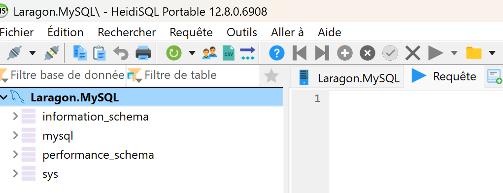
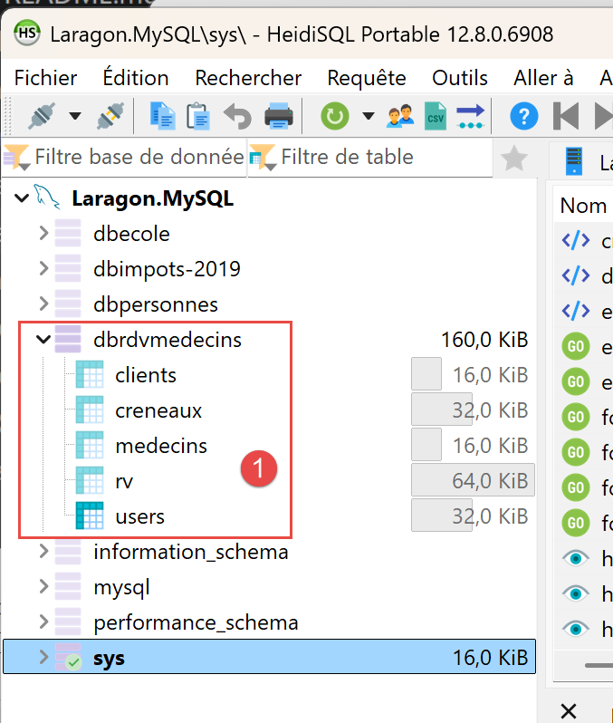
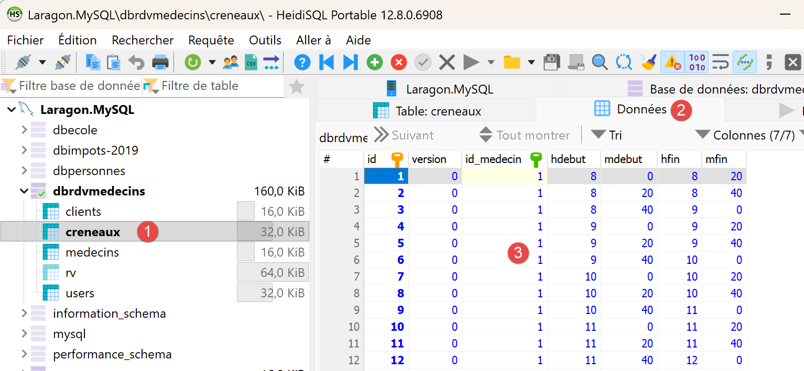

1. Einführung
Das PDF des Dokuments finden Sie |HIER|.
Den Code des Dokuments finden Sie |HIER|.
Dieses Dokument ist ein Produkt von Claude, der KI von Anthropic. Es knüpft an das Dokument „Schritt-für-Schritt-Einführung in das Web-Framework [Symfony]“ (2026) an, das seinerseits auf die Dokumente „Schritt-für-Schritt-Einführung in das Web-Framework [Laravel]“, „Schritt-für-Schritt-Einführung in das Web-Framework [Flask]“, „Schritt-für-Schritt-Einführung in das Web-Framework [Spring MVC]“, „Schritt-für-Schritt-Einführung in das Web-Framework [ASP.NET Core MVC]“ und „Schritt-für-Schritt-Einführung in das Web-Framework [NestJS]“ (2026) folgte. Dieses Dokument verlässt die [PHP]-Welt und kehrt zur Sprache [Python] zurück, der Sprache des Kurses [Flask], jedoch mit einem Framework von ganz anderem Umfang:
- Das Framework [Symfony] wird durch das Framework [Django] 6.1 ersetzt, das die Sprache [Python] (Version 3.12 oder höher) verwendet;
- die [Twig]-Views werden durch die [Django]-Templates ersetzt, die in dessen Template-Sprache DTL (Django Template Language) geschrieben sind;
- die Komponenten Form und Validator von [Symfony] werden durch die Formulare von [Django] (das Modul [django.forms]) ersetzt, die zugleich die Felder eines HTML-Formulars, deren Konvertierung und deren Validierung beschreiben;
- die Security-Komponente von [Symfony] (Firewall, Authenticators, Rollen) wird durch eigens dafür geschriebene Middleware und Dekoratoren ersetzt, die die Bibliothek [PyJWT] für JWT-Token und die Bibliothek [bcrypt] für Passwörter verwenden;
- die Event-Listener von [Symfony] werden durch die Middleware von [Django], die die Verarbeitung jeder Anfrage umschließt, und durch dessen Signale ersetzt;
- das ORM wird durch das ORM von [Django] ersetzt, weiterhin auf Basis von [MySQL].
Das Dokument folgt eng der Struktur des Kurses [Symfony]: zunächst zahlreiche kleine Projekte, die sich jeweils auf ein einziges Konzept konzentrieren, danach eine umfassende Fallstudie – eine Webanwendung zur Terminvergabe für eine Arztpraxis – mit vollständig kommentierten Dateien. Die Beispiele tragen dieselben Nummern und behandeln dieselben Themen wie in den Kursen [Symfony], [Laravel], [Flask], [Spring MVC] und [ASP.NET Core MVC]: Wer einen dieser Kurse kennt, kann die Frameworks Beispiel für Beispiel vergleichen. Notwendig ist das jedoch nicht: Dieses Dokument ist in sich abgeschlossen und setzt keine Vorkenntnisse dieser Frameworks voraus. Die einzigen Voraussetzungen sind Grundkenntnisse der Webprogrammierung (das HTTP-Protokoll, die Sprache HTML) und die Grundlagen der Sprache [Python] (Variablen, Listen, Dictionaries, Funktionen, Klassen, Module). Die weniger gebräuchlichen Merkmale von [Python], die in den Beispielen verwendet werden (Dekoratoren, Datenklassen, Typannotationen, Kontextmanager, Generatoren usw.), werden bei ihrem ersten Auftreten erklärt.
1.1. Die Rolle von Django in einer Webanwendung
Eine Webanwendung wird häufig in Schichten aufgebaut, wobei jede Schicht nur mit ihren unmittelbaren Nachbarn kommuniziert:

- Die Web-Schicht empfängt HTTP-Anfragen des Browsers und liefert ihm HTML-Seiten zurück. Dies ist die Schicht, bei deren Entwicklung uns [Django] unterstützt;
- die Geschäftsschicht enthält die Geschäftsregeln der Anwendung (z. B. „ein Patient kann nur einen bevorstehenden Termin haben“). Sie weiß nichts vom Web: Sie könnte ebenso gut eine Kommandozeilenanwendung bedienen;
- die Datenzugriffsschicht (DAO-Schicht, für Data Access Object) liest aus der Datenbank und schreibt in sie. Wir verwenden das ORM (Object Relational Mapper) von [Django], das Tabellenzeilen auf [Python]-Objekte abbildet.
Die Web-Schicht selbst folgt dem MVC-Muster (Model-View-Controller). Hier ist bei der Terminologie Vorsicht geboten, denn [Django] verwendet die Begriffe aus MVC nicht in ihrer üblichen Bedeutung. Die Dokumentation von [Django] spricht von der MTV-Architektur (Model–Template–View):
- Was MVC als Controller (C) bezeichnet, nennt [Django] eine View: eine [Python]-Funktion (oder Klasse), die eine Art von Anfrage verarbeitet (zum Beispiel [GET /schedule]). Eine View liest die Anfrageparameter, ruft die Geschäftsschicht auf und wählt dann die anzuzeigende Seite aus. Im Kurs [Symfony] war dies eine Action eines Controllers;
- Was MVC als View (V) bezeichnet, nennt [Django] ein Template: eine HTML-Datei, die Ausdrücke [{{ ... }}] und Anweisungen [{% if %}], [{% for %}] ... enthält, die die Template-Engine durch Daten ersetzt. Im Kurs [Symfony] war dies eine View ([Twig]);
- Was MVC als Model (M) bezeichnet – die Gesamtheit der an die Seite übergebenen Daten –, nennt [Django] den Template-Kontext: ein [Python]-Dictionary;
- Was [Django] schließlich ein Model nennt, ist eine [Python]-Klasse, die eine Datenbanktabelle darstellt (die Datei [models.py]): das, was [Symfony] als Entität bezeichnete.
Dieses Dokument verwendet die Terminologie von [Django], da sie in dessen Dokumentation, Fehlermeldungen und Dateinamen verwendet wird ([views.py], [templates], [models.py]): Eine View ist hier also stets die [Python]-Funktion, die eine Anfrage verarbeitet, und ein Template ist die HTML-Datei, die die Seite erzeugt. Der Begriff „Model“ hat zwei Bedeutungen, die der Kontext stets unterscheidet: In Kapitel 2 bezeichnet das Model einer View die Daten, die sie aus der Anfrage erhält und die durch eine Klasse beschrieben werden; ab Kapitel 7 ist ein Model von [Django] eine ORM-Klasse. Der Begriff „Seiten-Template“ (oder „Layout“) schließlich bezeichnet das gemeinsame Template, von dem andere Seiten erben (Beispiel 15).
Die Verarbeitung einer Anfrage folgt den nummerierten Schritten im Diagramm:
- 1: Der Browser sendet eine Anfrage, etwa HTTP;
- 2: Der Webserver empfängt die Anfrage und übergibt sie an die [Django]-Anwendung, und zwar über das Objekt [application] in der Datei [config/wsgi.py]. Während der Entwicklung ist dieser Server der in [Django] enthaltene, der mit dem Befehl [python manage.py runserver] gestartet wird; in der Produktion ist es ein [Python]-Server wie [gunicorn] oder [waitress], häufig hinter einem Webserver wie [nginx] platziert. [Django] leitet die Anfrage durch eine Reihe von Middleware-Komponenten, Klassen von [Django] und der Anwendung, die vor und nach der View eingreifen (Session-Verwaltung, Anti-CSRF-Schutz, Spracheinstellungen, Sicherheit usw.), und vergleicht den angeforderten Pfad mit den Routen der Anwendung – beschrieben in den Dateien [urls.py] –, um die für diese Anfrage zuständige View auszuwählen: Das ist das Routing;
- 3: Die View fordert die benötigten Daten von der Geschäftsschicht an; die Geschäftsschicht wendet sich bei Bedarf an die DAO-Schicht, die über das ORM die Datenbank [MySQL] in SQL abfragt;
- 4: Die View erstellt den Kontext (das Model M) und weist die Template-Engine an, die Seite zu erzeugen (Funktion [render]);
- 5: Die vom Template erzeugte HTML-Seite ist die Antwort der View, die [Django] nach erneutem Durchlaufen der Middleware an den Browser zurückgibt.
[Django] ist zusammen mit [Flask] eines der beiden großen Web-Frameworks der [Python]-Welt. Das freie und quelloffene Framework wurde 2003 von Adrian Holovaty und Simon Willison bei der Lawrence Journal-World, einer Zeitung in Kansas, entwickelt und 2005 veröffentlicht. Es ist nach dem Jazzgitarristen Django Reinhardt benannt. Heute wird es von einer Community unter dem Dach der Django Software Foundation weiterentwickelt und läuft überall dort, wo [Python] ([Windows], [Linux], [macOS]) läuft. Websites mit hohem Verkehrsaufkommen setzen es ein ([Instagram], [Pinterest], [Mozilla] ...). Sein Motto „the web framework for perfectionists in a hurry“ (das Web-Framework für Perfektionisten mit knappen Terminen) spiegelt seinen Ansatz wider: Während [Flask] nur einen Kern bereitstellt, der durch Erweiterungen ergänzt wird, kommt [Django] „batteries included“ daher: Routing, Templates, Formulare und Validierung, ORM und Datenbankmigrationen, Sessions, Meldungen, Übersetzungen, Caching, Schutz vor gängigen Angriffen (CSRF, SQL-Injection, Clickjacking) und sogar eine automatisch generierte Oberfläche zur Datenverwaltung. All das bildet ein stimmiges Paket, das an einer Stelle dokumentiert ist und so konzipiert wurde, dass die Teile zusammenarbeiten. Im Vergleich zu [Symfony] trifft [Django] andere Entscheidungen: kein Service-Container und keine Dependency Injection, sondern importierte [Python]-Module; eine in [Python] geschriebene Konfiguration in einer einzigen Datei ([settings.py]) statt in [YAML]; Views als einfache Funktionen. [Django] folgt außerdem einem regelmäßigen Veröffentlichungsrhythmus: etwa alle acht Monate eine Version und alle zwei Jahre eine Version mit Langzeitunterstützung (LTS) (5.2 im Jahr 2025, 6.2 im Jahr 2027); Hinweise auf veraltete Funktionen gehen deren Entfernung stets um zwei Versionen voraus. [Django] kann auch Server erstellen, die JSON an einen [JavaScript]-Client ([Angular], [React], [Vue.js], [Flutter] ...) liefern, oft mit der Erweiterung [Django REST framework], im Gegensatz zu klassischen Webanwendungen, bei denen der Server die HTML-Seiten erzeugt und der Browser sie nur anzeigt. Dieses Dokument behandelt diesen zweiten Anwendungsfall.
Ein wesentlicher Unterschied zu [PHP] erklärt vieles an [Django]: Die Anwendung wird einmal beim Start des Servers geladen und bleibt dann im Speicher, um alle folgenden Anfragen zu verarbeiten (Beispiel 01). Was beim Start aufgebaut wird (die Konfiguration, die Routing-Tabelle, die in Modulvariablen gespeicherten Objekte), wird von allen Anfragen gemeinsam genutzt. Das ist das Gegenteil von [Symfony], das die Anwendung bei jeder Anfrage neu aufbaute: Wir kommen darauf häufig zurück, insbesondere im Kapitel über Datenbereiche.
1.2. Verwendete Werkzeuge
Die Beispiele wurden mit den folgenden Werkzeugen geschrieben und getestet (ihre Installation wird im Anhang beschrieben):
- [Python] 3.13 (jede Version ab 3.12 ist geeignet: Das ist die Mindestanforderung von [Django] 6.1);
- [pip], der Bibliotheksmanager von [Python], und das Modul [venv], das virtuelle Umgebungen erstellt (beide sind in [Python] enthalten);
- der Editor [Visual Studio Code] mit den Microsoft-Erweiterungen [Python] und [Pylance] (Codeanalyse, Ausführung, Debugging) und einer Erweiterung für [Django]-Templates (Syntaxhervorhebung);
- ein moderner Browser ([Chrome], [Firefox], [Edge]);
- das Kommandozeilenwerkzeug [curl], das rohe HTTP-Antworten anzeigt (es ist in [Windows] 10 und 11 enthalten);
- das DBMS [MySQL] 8.4 oder höher (oder [MariaDB] 10.11 oder höher), zum Beispiel das von [Laragon] unter [Windows], ab dem Kapitel über den Datenzugriff und für die Fallstudie.
[Django] und die anderen Bibliotheken sind nicht Teil von [Python]: [pip] lädt sie bei der Installation aus dem PyPI-Repository (Python Package Index) herunter (Sie müssen an diesem Tag also mit dem Internet verbunden sein) und installiert sie in einer virtuellen Umgebung, einem projektspezifischen Ordner (siehe unten). Jedes Projekt beschreibt seine Bibliotheken in einer Datei [requirements.txt]. Die folgende Tabelle listet die wichtigsten mit den verwendeten Versionen auf:
Bibliothek | Rolle | Version |
[Django] | Das Framework: Entwicklungsserver, Routing, Views, Middleware, Templates, Formulare, Sessions, Meldungen, Übersetzungen, Cache, ORM; es installiert die beiden Bibliotheken, die es benötigt: [asgiref] (die Verbindung zwischen synchronem und asynchronem Code) und [sqlparse] (Formatierung der angezeigten SQL-Befehle) | 6.1.1 |
[Babel] | Formatierung von Zahlen, Beträgen und Datumsangaben je nach Sprache (Beispiel 16) | 2.18.0 |
[PyJWT] | JWT-Token (Kapitel über Authentifizierung) | 2.15.0 |
[mysqlclient] | Der von [MySQL]-Treiber, den [Django] verwendet (Beispiel 28 und Fallstudie) | 2.3.0 |
[bcrypt] | Passwort-Hashing (Fallstudie) | 5.0.0 |
[Django] wird üblicherweise mit [pip] installiert; anschließend wird ein Projekt mit dem Befehl [django-admin startproject] erstellt, den [Django] mitinstalliert (siehe Anhänge):
Dieser Befehl erstellt einen Ordner namens [my_project] , der eine Datei [manage.py] und ein Paket namens [my_project] mit fünf Dateien enthält ([settings.py], [urls.py], [wsgi.py], [asgi.py], [__init__.py]). Anwendungen werden anschließend mit dem Befehl [python manage.py startapp name] hinzugefügt, der einen Ordner mit sieben Dateien erstellt. So beginnt man ein echtes Projekt. Für das Lernen hat dieses Vorgehen einen Nachteil: Die generierte Datei [settings.py] enthält bereits etwa hundert Zeilen Code, die rund zehn Anwendungen und sieben Middleware-Komponenten aktivieren, deren Zweck noch nicht klar ist. Die Beispiele in diesem Dokument beginnen deshalb am anderen Ende: Beispiel 01 ist die kleinstmögliche [Django]-Anwendung, und jedes Beispiel fügt nur die Dateien und Einstellungen hinzu, die es benötigt, von Hand geschrieben und kommentiert. Die Fallstudie am Ende folgt der Struktur einer standardmäßigen [Django]-Anwendung.
1.3. Die Fallstudie ausführen
1.3.1. Laragon installieren
Die Fallstudie benötigt das DBMS [MySQL]. Laragon kann dieses und mehr bereitstellen. Im September 2026 ist Laragon unter der URL [Download Laragon – Fast & Modern Dev Environment] verfügbar. Laragon enthält Werkzeuge, mit denen Sie einen Webserver und das DBMS [MySQL] installieren können:

- in [1] ein Apache-Webserver;
- in [2] das DBMS [MySQL];
- in [3] ein Werkzeug für Nachrichten, das wir nicht verwenden werden;
- [4] startet alle Dienste (Apache, [MySQL], MailPit);
- [5] zeigt die Webseite der URL [http://localhost] an. Standardmäßig verweist diese URL auf den Ordner <laragon-install>\www, wobei <laragon-install> der Installationsordner von Laragon ist;
- in [6] wird das Werkzeug HeidiSQL gestartet, mit dem Sie MySQL-Datenbanken verwalten können. Wir verwenden dieses Werkzeug, um die in der Fallstudie benutzte Datenbank zu erstellen;
- in [7] öffnen Sie ein Terminal, in dessen PATH sich alle für Laragon erforderlichen Programme befinden;
- in [8] öffnen Sie ein Windows-Explorer-Fenster im Ordner, der der URL [http://localhost] zugeordnet ist;
Der Installationsordner von Laragon enthält die folgenden Elemente:

In [1] enthält der Ordner [bin] zahlreiche Anwendungen:

- in [1] den Apache-Webserver;
- in [2] ein Kommandozeilen-Terminal;
- in [3] einen [git]-Client, mit dem Sie verschiedene Versionen eines Projekts verwalten können;
- in [4] einen Datenbankmanager;
- [5] einen E-Mail-Manager;
- in [6] das DBMS und [MySQL];
- [7] einen weiteren Webserver;
- in [8] [node.js] zum Ausführen von JavaScript-Skripten;
- [9] einen Texteditor;
- [10] den PHP-Interpreter;
- [11] den [Python]-Interpreter;
- [12] einen Cache-Server;
Laragon bringt eine umfassende Entwicklungsumgebung mit. In diesem Kurs verwenden wir nur das DBMS [MySQL], [6], und das Werkzeug [heidisql] zu dessen grafischer Verwaltung. Der [Python] [11] -Interpreter von Laragon ist für [Django] 6.1 möglicherweise nicht aktuell genug (erforderlich ist Version 3.12 oder höher): Stattdessen installieren wir [Python] von der offiziellen Website (siehe Anhänge) und aktivieren im Installer das Kontrollkästchen, das [python] zum vorhandenen PATH des Rechners hinzufügt.
Die in der Fallstudie erwähnte README gibt an, dass Sie in einem im Ordner der Anwendung geöffneten Terminalfenster die folgenden Befehle eingeben müssen:
um eine virtuelle [Python]-Umgebung zu erstellen, und einen Ordner namens [.venv], in dem die Bibliotheken der Anwendung installiert werden;
um diese Umgebung im Terminal zu aktivieren (unter [Linux] und [macOS]: [source .venv/bin/activate]). Der Terminal-Prompt beginnt dann mit [(.venv)];
um die für die Fallstudie erforderlichen [Python]-Bibliotheken zu installieren ([Django], [mysqlclient], [PyJWT], [bcrypt]);
um die Fallstudie auszuführen. Wenn Sie in VSCode ein [PowerShell]-Terminal verwenden, kann [PowerShell] die Ausführung des Aktivierungsskripts verweigern und die Meldung „Die Skriptausführung ist auf diesem System deaktiviert“ anzeigen. Um sie nur für Ihr Benutzerkonto zu erlauben, geben Sie einmalig in einem [PowerShell]-Terminal Folgendes ein:
Sie müssen VSCode neu starten, damit diese Änderung wirksam wird. Alternativ können Sie in VSCode ein Terminal namens [Command Prompt] statt [PowerShell] auswählen, in dem das Skript [activate] ohne diese Genehmigung ausgeführt wird.
Um die für die Fallstudie erforderliche [MySQL]-Datenbank zu erstellen, gehen Sie wie folgt vor:

- In [1] müssen alle Dienste gestartet sein;
- in [2] ermöglicht die Option [Database] die Verwaltung der Datenbank;
Die Option [Database] startet ein Hilfsprogramm namens HeidiSQL:

- In [1] können Sie verschiedene DBMS-Optionen auswählen. Der vorgegebene Wert ist das DBMS MySQL. Das ist in Ordnung;
- in [2] melden Sie sich bei HeidiSQL an;


- In [1-2] führen Sie die SQL-Datei aus und wählen dann die Datei [dbrdvmedecins2.sql], die Sie im Ordner [django-sept-2026/rdvmedecins2-django/database] finden:

Durch das Ausführen der Datei [3] wird die in der Fallstudie verwendete Datenbank [dbrdvmedecins2] erstellt. Um sie anzuzeigen, drücken Sie in HeidiSQL F5, um die Anzeige zu aktualisieren.
Hinweis: Die folgenden Screenshots zeigen eine Datenbank namens [dbrdvmedecins], während die Datenbank der Fallstudie [dbrdvmedecins2] heißt. Die beiden Datenbanken sind nahezu identisch, daher erschien es uns nicht notwendig, neue Screenshots zu erstellen.

Die Datenbank [dbrdvmedecins] wurde erstellt. Ihr Inhalt:

- in [1-3]die Tabelle [clients];
- [id] ist der Primärschlüssel der Tabelle;
- [version] ist die Versionsnummer der Zeile. Diese Nummer wird bei jeder Änderung der Zeile erhöht;
- [titre, nom, prenom] identifizieren die Person;

- in [1-3]die Tabelle [medecins];
- [id] ist der Primärschlüssel der Tabelle;
- [version] ist die Versionsnummer der Zeile;
- [titre, nom, prenom] identifizieren die Person;

- In [1-3]die Tabelle der Terminzeiträume der Ärzte:
- [id]: Primärschlüssel;
- [version]: Versionsnummer der Zeile;
- [id_medecin]: Fremdschlüssel, der auf den Primärschlüssel des Arztes verweist;
- [hdebut, mdebut]: Stunde und Minuten des Terminbeginns. So bedeutet [8,20] 8:20 Uhr.
- [hfin, mfin]: Stunde und Minuten des Endes der Sprechstunde.

- In [1-3]die Tabelle [rv] der vereinbarten Termine;
- [id]: Primärschlüssel;
- [version]: Versionsnummer;
- [jour]: Datum des Termins;
- [id_creneau]: Fremdschlüssel, der auf den Primärschlüssel des Terminzeitraums verweist. Da ein Zeitraum mit einem Arzt verknüpft ist, wissen wir, welcher Arzt diesen Termin wahrnimmt;
- [id_client]: Fremdschlüssel auf die Nummer (den Primärschlüssel) des Kunden, der den Termin anfragt;

- in [1-3]die Tabelle [users], die die zur Nutzung der Anwendung berechtigten Benutzer auflistet;
- [id, version]: Primärschlüssel, Versionsnummer;
- [login, password]: Zugangsdaten des Benutzers;
- [nom]: Name des Benutzers;
- [role]: Rolle des Benutzers. [ADMIN] hat vollen Zugriff; [MEDECIN] sieht den eigenen Terminkalender; [PATIENT] (ein Kunde der Praxis) vereinbart und storniert die eigenen Termine;
1.3.2. Die Fallstudie durchführen
Anmerkung des Prüfers: Ich rate dem Leser, die Fallstudie sofort wie unten beschrieben durchzuführen. Sobald Sie die Rolle dieser Terminanwendung vollständig verstanden haben, bitten Sie Ihre bevorzugte KI, die Anwendung wie folgt zu ändern: Künftig kann jeder Arzt:
- seine eigenen Sprechzeiten zwischen zwei Daten festlegen. So kann er seinen Terminkalender nach Bedarf anpassen;
- bestimmte Zeiträume für einen bestimmten Tag aus dem Kalender entfernen – zum Beispiel, wenn er aus persönlichen Gründen nicht verfügbar ist;
Die Änderung ist nicht trivial, da sie eine Änderung der Datenbankstruktur erfordert. Bitten Sie die KI, Ihnen den neuen Code der Anwendung und das SQL-Skript zum Erstellen der neuen Datenbank zu liefern. Dazu müssen Sie ihr die ZIP-Datei mit dem vollständigen Projekt sowie das SQL-Skript der alten Datenbank zur Verfügung stellen.
Außerdem habe ich den von Claude erstellten Kurs nicht durchgesehen. Er hatte bereits die Kurse [NestJS], [ASP.NET Core MVC], [Spring MVC] und [Flask] erstellt, die allesamt einwandfrei waren. Ich bin davon ausgegangen, dass dies auch hier der Fall ist. Wenn Sie etwas nicht verstehen, ist die Lösung immer dieselbe: Bitten Sie Ihre bevorzugte KI, Ihnen zu erklären, was Sie nicht verstehen. Claude ist beispielsweise sehr gut darin. Möglicherweise müssen Sie das Beispiel, das Sie nicht verstehen, zu ihm „hochladen“.
Ende der Anmerkung.
Die Fallstudie am Ende dieses Dokuments ist eine vollständige Anwendung. Leser werden sie wahrscheinlich in Aktion sehen wollen, bevor sie sich in die Details des Frameworks vertiefen: Hier steht, wie man sie ausführt. Sie befindet sich im Ordner [rdvmedecins2-django] neben dem Ordner [examples]:
Sie müssen [Python] (Version 3.12 oder höher), [Visual Studio Code] und [MySQL] installiert haben (siehe Anhänge). Dann:
- Erstellen Sie die Datenbank [dbrdvmedecins2], indem Sie das Skript [rdvmedecins2-django/database/dbrdvmedecins2.sql] ausführen. Öffnen Sie mit [Laragon] das Werkzeug [HeidiSQL] (Schaltfläche Database) und führen Sie das Skript über das Menü File / Run SQL aus (siehe oben). In der Kommandozeile, aus dem Ordner [rdvmedecins2-django]:
- Öffnen Sie den Ordner [rdvmedecins2-django] in [Visual Studio Code] (Menü File / Open Folder) und öffnen Sie dann ein Terminal (Menü Terminal / New Terminal);
- erstellen Sie die virtuelle Umgebung der Anwendung, aktivieren Sie sie und installieren Sie anschließend ihre Bibliotheken: [pip] liest die Datei [requirements.txt], lädt [Django] und die übrigen Bibliotheken herunter und legt sie im Ordner [.venv] der Anwendung ab (dauert einige Dutzend Sekunden). Unter [Windows]:
- Unter [Linux] und [macOS] lautet der zweite Befehl [source .venv/bin/activate]. [Visual Studio Code] zeigt ein Fenster an, in dem gefragt wird, ob Sie diese Umgebung für den Ordner verwenden möchten: Bestätigen Sie; jedes danach geöffnete Terminal aktiviert sie automatisch;
- prüfen Sie die Verbindung zur Datenbank. Die Anwendung verbindet sich mit [MySQL] auf [127.0.0.1], Port 3306, mit dem Benutzer [root] ohne Passwort (den Standardeinstellungen von [Laragon]). Wenn Ihr Konto [root] ein Passwort hat, tragen Sie es in der Datei [.env] der Anwendung in der Zeile [DB_PASSWORD=] ein;
- starten Sie die Anwendung:
- [Django] zeigt an:
Der Entwicklungsserver lauscht auf Port 8081 des Rechners ([127.0.0.1], also [localhost]). Jede empfangene Anfrage wird in der Konsole protokolliert, ebenso die an die Datenbank gesendeten SQL-Befehle;
- Öffnen Sie die URL [http://localhost:8081] in einem Browser:

- Melden Sie sich mit einem der Demokonten an, deren Passwort mit dem Benutzernamen identisch ist: [admin] (Administrator), [pelissier], [tatou], [dupont] (Ärzte), [martin], [durand], [bistrou], [german] (Patienten). Außerdem müssen Sie die Zeichen aus dem Bild eingeben, in Groß- oder Kleinschreibung.
Beim Start prüft der Befehl [runserver] das Projekt und verbindet sich dazu, zusammen mit [MySQL], mit der Datenbank: Ist die Datenbank nicht erreichbar, startet der Server nicht, und die Konsole zeigt den Fehler am Ende eines langen Aufrufstapels an. Lautet die Meldung [(2002, "Can't connect to server on '127.0.0.1' (10061)")], wurde [MySQL] nicht gestartet; bei [(1045, "Access denied for user 'root'@'localhost' (using password: NO)")] ist das Passwort falsch; bei [(1049, "Unknown database 'dbrdvmedecins2'")] wurde das SQL-Skript nicht ausgeführt. Schlägt der Befehl [python manage.py runserver] mit der Meldung [ModuleNotFoundError: No module named 'django'] fehl, ist die virtuelle Umgebung nicht aktiviert (oder [pip install] wurde nicht ausgeführt); lautet die Fehlermeldung [Error: That port is already in use.], wird Port 8081 bereits verwendet (zum Beispiel von einer anderen Version der Anwendung). Die Datei [README.md] der Anwendung beschreibt weitere Szenarien. Beenden Sie die Anwendung mit [Ctrl-C] im Terminal ([Ctrl-Pause] unter [Windows], wie in der Meldung von [Django] angegeben, aber [Ctrl-C] funktioniert ebenfalls).
Sobald der Leser den Zweck dieser Terminanwendung vollständig verstanden hat, kann er seine bevorzugte KI bitten, sie wie folgt zu ändern: Künftig kann jeder Arzt:
- seine eigenen Terminzeiträume zwischen zwei Daten festlegen. So kann er seinen Terminkalender nach Bedarf anpassen;
- bestimmte Zeiträume für einen bestimmten Tag aus dem Kalender entfernen – zum Beispiel, wenn er aus persönlichen Gründen nicht verfügbar ist.
Die Änderung ist nicht trivial, da sie eine Änderung der Datenbankstruktur erfordert. Sie müssen die KI um den neuen Code der Anwendung und um das SQL-Skript bitten, das die neue Datenbank erstellt, und ihr dazu die ZIP-Datei mit dem vollständigen Projekt sowie das SQL-Skript der alten Datenbank zur Verfügung stellen. Ebenso gilt: Wenn Sie in diesem Dokument auf etwas stoßen, das Sie nicht verstehen, ist die Lösung immer dieselbe: Bitten Sie Ihre bevorzugte KI, Ihnen zu erklären, was Sie nicht verstehen, und stellen Sie ihr bei Bedarf das betreffende Beispiel zur Verfügung.
Die Fallstudie am Ende des Dokuments zeigt, wie die Anwendung verwendet wird, und erläutert anschließend jede ihrer Dateien.
1.4. Beispiele
Die Beispiele liegen im Ordner [examples], mit einem Unterordner pro Beispiel:
Jedes Beispiel ist eine kleine Anwendung ([Django]), die eigenständig läuft. Alle Beispiele verwenden dieselben Bibliotheken, die in der Datei [examples/requirements.txt] beschrieben sind:
- Zeilen 1–2: Kommentare; in [Python] erstreckt sich ein Kommentar, wie in dieser Datei, von [#] bis zum Zeilenende;
- Zeilen 3–6: die Bibliotheken, eine pro Zeile, mit ihren genauen Versionen: [Django] selbst, [mysqlclient] (Zugriff auf [MySQL], Beispiel 28), [PyJWT] (die JWT-Token, Beispiel 25) und [Babel] (sprachspezifische Formatierung von Zahlen und Datumsangaben, Beispiel 16). Der Operator [==] erzwingt die Version; [>=6.1,<6.2] würde alle Versionen 6.1.x akzeptieren. Die beiden von [Django] benötigten Bibliotheken ([asgiref], [sqlparse]) sind nicht aufgeführt: [pip] installiert sie automatisch, da [Django] sie als Abhängigkeiten deklariert.
[Python] kennt pro Interpreter nur einen Bibliotheksordner. Damit jedes Projekt seine eigenen Bibliotheken in den passenden Versionen hat, wird eine virtuelle Umgebung erstellt: ein Ordner mit einer leichtgewichtigen Kopie des Interpreters und einem eigenen Bibliotheksordner ([Lib/site-packages] unter [Windows], [lib/python3.13/site-packages] andernorts). Um die Beispiele auszuführen, erstellen Sie einmalig eine virtuelle Umgebung und installieren Sie darin deren Bibliotheken, in einem im Ordner [examples] geöffneten Terminal:
[python -m venv .venv] führt das Modul [venv] von [Python] aus, das die Umgebung im Ordner [.venv] erstellt. Das Skript [activate] (unter [Linux] und [macOS]: [source .venv/bin/activate]) ändert den PATH des Terminals: Die Befehle [python] und [pip] beziehen sich dann auf die der Umgebung, und der Prompt beginnt mit [(.venv)]. [pip install -r requirements.txt] installiert die Bibliotheken der Datei. Die Umgebung [examples/.venv] wird von allen 28 Beispielen gemeinsam genutzt: Sie wird in jedem Terminal aktiviert, in dem Sie eines ausführen möchten. Der Befehl [pip list] zeigt die installierten Bibliotheken an, und [deactivate] deaktiviert die Umgebung. Der Ordner [common] enthält das CSS-Framework [Bootstrap] ([common/static/bootstrap]), das von den Beispielen genutzt wird, die ihre Seiten formatieren (ab Beispiel 15).
Fast alle Beispiele haben dieselbe Struktur – die eines standardmäßigen [Django]-Projekts, auf das Wesentliche reduziert. Zum Beispiel die Struktur von Beispiel 13:
- [manage.py]: das Kommandozeilenwerkzeug des Projekts, das unter anderem den Entwicklungsserver startet (Beispiel 01);
- [config]: das Konfigurationspaket des Projekts: seine Einstellungen ([settings.py]), seine Routen ([urls.py], Beispiel 02) und sein Einstiegspunkt für einen Webserver ([wsgi.py]). Ein mit [django-admin startproject] erstelltes Projekt gibt diesem Paket den Namen des Projekts; wir nennen es in allen Beispielen [config] , um seine Rolle zu verdeutlichen;
- [pages]: eine [Django]-Anwendung: ein [Python]-Paket, das Views ([views.py]), deren Routen ([urls.py]) und die von ihnen benötigten Klassen zusammenfasst. Ein Projekt ist eine Sammlung von Anwendungen, die die Einstellung [INSTALLED_APPS] auflistet (Beispiel 02);
- [templates]: die Templates (ab dem Kapitel über Templates).
Um ein Beispiel auszuführen, öffnen Sie ein Terminal in dessen Ordner (in [Visual Studio Code]: Rechtsklick auf den Beispielordner, dann „Open in the built-in terminal“ wählen), aktivieren Sie die virtuelle Umgebung der Beispiele ([..\.venv\Scripts\activate] unter [Windows], [source ../.venv/bin/activate] andernorts) und geben Sie ein:
Alle Beispiele lauschen auf Port 8000: Sie können immer nur eines gleichzeitig ausführen (oder Sie müssen den Port ändern: [python manage.py runserver 8001]). Beenden Sie den Server mit [Ctrl-C] im Terminal. Sie müssen den Server nach der Änderung einer [Python]-Datei oder eines Templates nicht neu starten: Der Entwicklungsserver überwacht die Projektdateien und startet automatisch neu, sobald sich eine davon ändert (Beispiel 01).
Wenn Sie den Ordner [examples] in [Visual Studio Code] öffnen, müssen Sie der Erweiterung [Python] den Interpreter der virtuellen Umgebung angeben (Python-Befehl: Select Interpreter in der Befehlspalette, [Ctrl-Maj-P], dann [.venv\Scripts\python.exe]): Die Erweiterung [Pylance] analysiert dann alle Dateien mit den Bibliotheken der Umgebung, einschließlich [Django]: In jeder Datei stehen Ihnen Code-Vervollständigung, die Navigation zur Definition einer Klasse oder Funktion (Taste [F12]) und die Fehleranzeige zur Verfügung. Da alle Beispiele ein Paket [config] enthalten, kann die Analyse die Pakete zweier Beispiele verwechseln; dies hat keine Auswirkung auf die Ausführung, da jedes Beispiel separat aus seinem eigenen Ordner gestartet wird. Um diese Verwechslung zu vermeiden, öffnen Sie einfach direkt den Ordner des Beispiels.
1.5. Inhalt des Dokuments
Das Dokument ist wie folgt aufgebaut:
Kapitel | Thema | Beispiele |
Views, Routing, Antworten | Von der Anfrage zur View: Routen, Anwendungen, Antworten, Weiterleitungen, gemeinsam genutzte Dienste | 01 bis 06 |
Die View und ihr Model | Anfrageparameter: Lesen, Konvertierung, Validierung über die [Django]-Formulare, POST-Anfragen | 07 bis 12 |
Templates und Formulare | die [Django]-Template-Sprache, Seiten-Templates, Fragmente, benutzerdefinierte Tags und Filter, Formulare, Validierung, PRG, Anti-CSRF-Schutz | 13 bis 21 |
Internationalisierung | Eine Anwendung auf Französisch und Englisch | 22 |
Datenbereiche | Anfrage, Session, Cache, Cookies | 23 |
Der Lebenszyklus einer Anfrage | Signale, Middleware, Routen-Konverter, Fehlerbehandlung | 24 |
Authentifizierung und Autorisierung | JWT-Token in einem Cookie, Authentifizierungs-Middleware, Dekoratoren, Rollen, CAPTCHA, Begrenzung der Versuche | 25–27 |
Geschichtete Architektur und Datenzugriff | Web / Geschäftslogik / DAO mit dem ORM von [Django] und [MySQL] | 28 |
Fallstudie | Die Anwendung RdvMedecins, Datei für Datei erläutert | - |
Jedes Beispiel führt nur wenige neue Konzepte ein, und die Kapitel bauen aufeinander auf: Am besten lesen Sie sie der Reihe nach. Die Fallstudie hingegen greift auf alle Konzepte der vorherigen Kapitel zurück: Wo es sinnvoll ist, verweist ihr Kommentar auf das Beispiel, in dem das Konzept eingeführt wurde. Die Anhänge beschreiben die Installation der Werkzeuge: [Python], [pip], der virtuellen Umgebungen, [Visual Studio Code] und seiner Erweiterungen, [MySQL] mit [Laragon], [curl] und des Werkzeugs [django-admin].